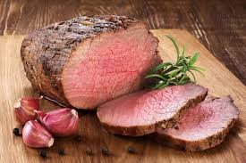

Simple Roastbeef Recipe!

Ingredients Needed:
- Beef
- Garlic
- Oil
- Rosemary
- Salt
- Pepper
- Whatever you want to add
- Smash a few garlic cloves
- Add them to a frying pan with the hot oil
- Add the rosemary beads
- Season the Beef generously with pepper and salt
- Add the Beef once it starts to smell like garlic
- Fry each side quickly for a min or two
- Bake in the oven for 5-8mins